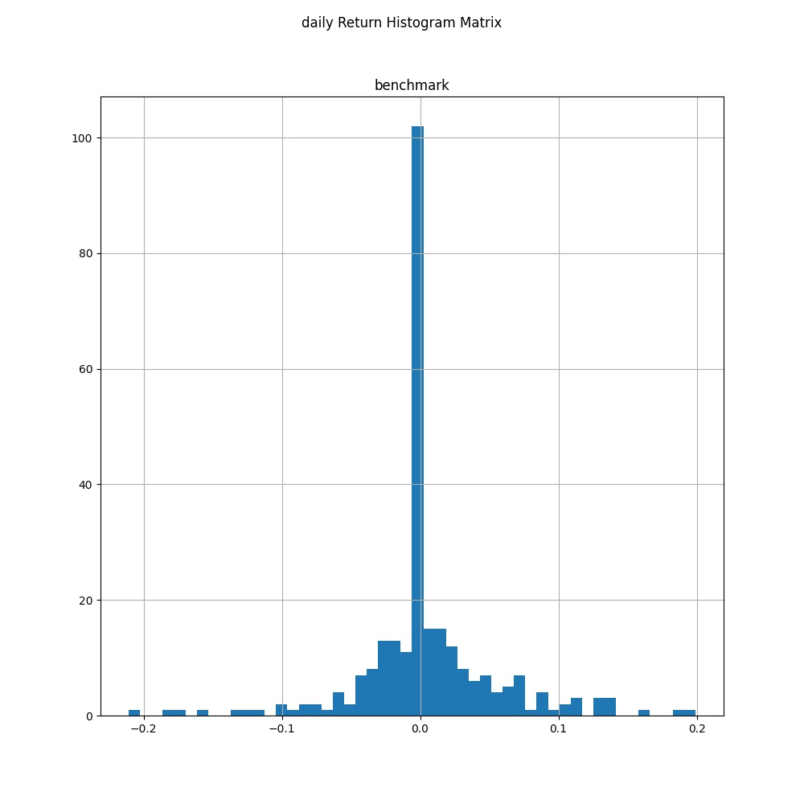
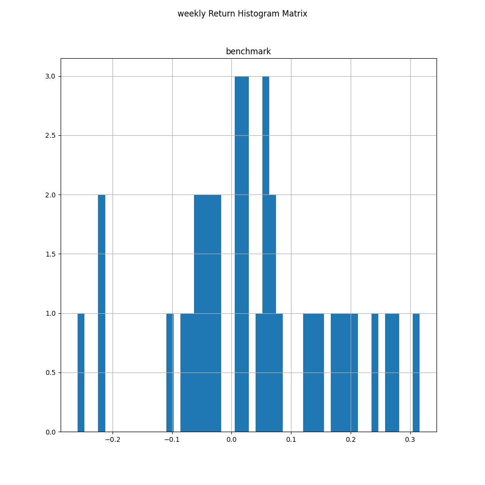

Performance Evaluation#
Strategy Return Analysis#
import bt
import talib
import matplotlib.pyplot as plt
import pandas as pd
def buy_and_hold(ticker, name, start='2020-2-1', end='2020-11-1'):
# Get the data
price_data = bt.get(ticker, start=start, end=end)
# Define the benchmark strategy
bt_strategy = bt.Strategy(name,
[bt.algos.RunOnce(),
bt.algos.SelectAll(),
bt.algos.WeighEqually(),
bt.algos.Rebalance()])
# Return the backtest
return bt.Backtest(bt_strategy, price_data)
# Create benchmark strategy backtest
benchmark = buy_and_hold('tsla', name='benchmark')
# Run all backtests and plot the resutls
bt_result = bt.run(benchmark)
def signal_strategy(ticker, period, name, start='2017-2-1', end='2020-11-1'):
# Get the data and calculate SMA
price_data = bt.get(ticker, start=start, end=end)
sma = price_data.rolling(period).mean()
# Define the signal-based trategy
bt_strategy = bt.Strategy(name,
[bt.algos.SelectWhere(price_data > sma),
bt.algos.WeighEqually(),
bt.algos.Rebalance()])
# Return the backtest
return bt.Backtest(bt_strategy, price_data)
# Create signal strategy backtest
sma30 = signal_strategy('tsla', period=30, name='SMA30')
sma50 = signal_strategy('tsla', period=50, name='SMA50')
# Run all backtests and plot the resutls
bt_results = bt.run(sma30, sma50)
Review return results of a backtest#
You implemented a trend-following strategy using a simple moving average indicator. You backtested it using the Amazon stock historical price data from 2019 to 2020, and the result plot is shown on the right. Now you would like to review the return statistics from the backtest result.
# Obtain all backtest stats
resInfo = bt_result.stats
# Get daily, monthly, and yearly returns
print('Daily return: %.4f'% resInfo.loc['daily_mean'])
print('Monthly return: %.4f'% resInfo.loc['monthly_mean'])
print('Yearly return: %.4f'% resInfo.loc['yearly_mean'])
Daily return: 1.9139
Monthly return: 1.9950
Yearly return: nan
# Get the compound annual growth rate
print('Compound annual growth rate: %.4f'% resInfo.loc['cagr'])
Compound annual growth rate: 3.2911
Plot return histograms of a backtest#
Continue with the same strategy backtest result from the previous exercise. Now you would like to plot return histograms to further examine the characteristics of the return distribution.
# Plot the daily return histogram
bt_result.plot_histograms(bins=50, freq = 'd')
plt.savefig("Data/daily_return.jpg")

# Plot the weekly return histogram
bt_result.plot_histograms(bins=50, freq = 'w')
plt.savefig("Data/weekly_return.jpg")

Compare return results of multiple strategies#
With the same strategy using a simple moving average indicator, you also conducted a strategy optimization by varying the lookback periods of the moving average indicator from 30 to 50 days. You backtested both strategies using the Google stock historical price data from 2017 to 2020. Now you are about to compare the backtest results.
# Get the lookback returns
lookback_returns = bt_results.display_lookback_returns()
print(lookback_returns)
SMA30 SMA50
mtd -6.65% -5.36%
3m -0.00% 36.48%
6m 90.24% 159.64%
ytd 310.51% 353.24%
1y 436.19% 501.89%
3y 48.14% 54.92%
5y nan% nan%
10y nan% nan%
incep 36.75% 39.55%
Drawdown#
Review performance with drawdowns#
You implemented a signal-based strategy using two moving average indicators. You performed a backtest using the Tesla stock historical price data from 2019 to 2020, and the result plot is shown on the right. Now you would like to evaluate the strategy performance, specifically the downside volatility, by reviewing the drawdown result from the backtest.
# Obtain all backtest stats
resInfo = bt_result.stats # Buy and Hold Strategy
# Get the average drawdown
avg_drawdown = resInfo.loc['avg_drawdown']
print('Average drawdown: %.2f'% avg_drawdown)
Average drawdown: -0.12
# Get the average drawdown days
avg_drawdown_days = resInfo.loc['avg_drawdown_days']
print('Average drawdown days: %.0f'% avg_drawdown_days)
Average drawdown days: 20
Calculate and review the Calmar ratio#
Continue with the same strategy. From the previous exercise, you know that the average drawdown is approximately 11%, and that the average period is 22 days. Now you would like to get a better understanding of the risk-return profile of it. You plan to review the CAGR, max drawdown, then use them to calculate the Calmar ratio and assess the result.
# Get the CAGR
cagr = resInfo.loc['cagr']
print('Compound annual growth rate: %.4f'% cagr)
Compound annual growth rate: 3.2911
# Get the max drawdown
max_drawdown = resInfo.loc['max_drawdown']
print('Maximum drawdown: %.2f'% max_drawdown)
Maximum drawdown: -0.61
# Calculate Calmar ratio manually
calmar_calc = cagr / max_drawdown * (-1)
print('Calmar Ratio calculated: %.2f'% calmar_calc)
Calmar Ratio calculated: 5.43
# Get the Calmar ratio
calmar = resInfo.loc['calmar']
print('Calmar Ratio: %.2f'% calmar)
Calmar Ratio: 5.43